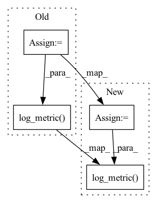

Pattern ID :19191
Before Change
// Hyperopt training function
def hyper_objective(learning_rate):
torch_model = train(learning_rate)
pred_df = torch_model.transform(test_df)
argmax = udf(lambda v: float(np.argmax(v)), returnType=T.DoubleType())
pred_df = pred_df.withColumn("label_pred", argmax(pred_df.label_prob))
evaluator = MulticlassClassificationEvaluator(predictionCol="label_pred", labelCol="label", metricName="accuracy")
accuracy = evaluator.evaluate(pred_df)
print("Test accuracy:", accuracy)
with mlflow.start_run():
mlflow.log_metric("learning_rate", learning_rate)
mlflow.log_metric( "loss", 1-accuracy)
return {"loss": 1-accuracy, "status": STATUS_OK}
// Do a super parameter tuning with hyperoptAfter Change
def hyper_objective(learning_rate):
with mlflow.start_run():
model = train(learning_rate)
// Write checkpoint
meta = {
"input_shapes": model.getInputShapes(),
"metadata": model._get_metadata(),
}
save_checkpoint(checkpoint_dir, model.getModel(), None, learning_rate, meta)
test_loss = test_model(model)
mlflow.log_metric("learning_rate", learning_rate)
mlflow.log_metric( "loss", test_loss)
return {"loss": test_loss, "status": STATUS_OK}
// Do a super parameter tuning with hyperoptIn pattern: SUPERPATTERN
Frequency: 4
Non-data size: 4
Instances Fragment ID: 62429433
Project Name: oap-project/cloudtik
Commit Name: cf76222205e7c6ad94a12bddf54446f8c2ed5c77
Time: 2022-12-06
Author: haifeng.chen@intel.com
File Name: example/ml/jobs/spark-mlflow-hyperopt-horovod-pytorch-mnist.py
M Class Name: AnonimousClass
N Class Name: AnonimousClass
M Method Name: hyper_objective(1)
N Method Name: hyper_objective(1)
M Parent Class:
N Parent Class:
M File Name: example/ml/jobs/spark-mlflow-hyperopt-horovod-pytorch-mnist.py
N File Name: example/ml/jobs/spark-mlflow-hyperopt-horovod-pytorch-mnist.py
M Start Line: 186
M End Line: 197
N Start Line: 252
N End Line: 265
Before Change
Save the last unsaved predicted las and keep track of best IoU
if self.train_iou_has_improved:
val_iou = np.mean(self.val_iou_accumulator)
self.max_reached_val_iou = max(val_iou, self.max_reached_val_iou)
self.experiment.log_metric( "val/max_iou", self.max_reached_val_iou)
self.train_iou_has_improved = False
def test_step(self, batch: Any, batch_idx: int):After Change
def on_validation_end(self):
Save the last unsaved predicted las and keep track of best IoU
val_iou = np.mean(self.val_iou_accumulator)
self.max_reached_val_iou = max(val_iou, self.max_reached_val_iou)
self.experiment.log_metric( "val/max_iou", self.max_reached_val_iou)
def test_step(self, batch: Any, batch_idx: int):
loss, _, proba, preds, targets = self.step(batch)
acc = self.test_accuracy(preds, targets) Fragment ID: 62429423
Project Name: ignf/lidar-deep-segmentation
Commit Name: 9f61baf5b246fe144f329e09a13ec495fed69793
Time: 2021-10-21
Author: charles.gaydon@gmail.com
File Name: semantic_val/models/model.py
M Class Name: SegmentationModel
N Class Name: SegmentationModel
M Method Name: on_validation_end(1)
N Method Name: on_validation_end(1)
M Parent Class: LightningModule
N Parent Class: LightningModule
M File Name: semantic_val/models/model.py
N File Name: semantic_val/models/model.py
M Start Line: 233
M End Line: 238
N Start Line: 214
N End Line: 216
Before Change
// Hyperopt training function
def hyper_objective(learning_rate):
keras_model = train(learning_rate)
pred_df = keras_model.transform(test_df)
argmax = udf(lambda v: float(np.argmax(v)), returnType=T.DoubleType())
pred_df = pred_df.withColumn("label_pred", argmax(pred_df.label_prob))
evaluator = MulticlassClassificationEvaluator(predictionCol="label_pred", labelCol="label", metricName="accuracy")
accuracy = evaluator.evaluate(pred_df)
print("Test accuracy:", accuracy)
with mlflow.start_run():
mlflow.log_metric("learning_rate", learning_rate)
mlflow.log_metric( "loss", 1-accuracy)
return {"loss": 1-accuracy, "status": STATUS_OK}
// Do a super parameter tuning with hyperoptAfter Change
def hyper_objective(learning_rate):
with mlflow.start_run():
model = train(learning_rate)
// Write checkpoint
meta = {
"custom_objects": model.getCustomObjects(),
"floatx": model._get_floatx(),
"metadata": model._get_metadata(),
}
save_checkpoint(checkpoint_dir, model.getModel(), None, learning_rate, meta)
test_loss = test_model(model)
mlflow.log_metric("learning_rate", learning_rate)
mlflow.log_metric( "loss", test_loss)
return {"loss": test_loss, "status": STATUS_OK}
// Do a super parameter tuning with hyperopt Fragment ID: 62429427
Project Name: oap-project/cloudtik
Commit Name: 1d4628d27213dc5dfa75fffa8ba02ec2be572e67
Time: 2022-12-06
Author: haifeng.chen@intel.com
File Name: example/ml/jobs/spark-mlflow-hyperopt-horovod-tensorflow.py
M Class Name: AnonimousClass
N Class Name: AnonimousClass
M Method Name: hyper_objective(1)
N Method Name: hyper_objective(1)
M Parent Class:
N Parent Class:
M File Name: example/ml/jobs/spark-mlflow-hyperopt-horovod-tensorflow.py
N File Name: example/ml/jobs/spark-mlflow-hyperopt-horovod-tensorflow.py
M Start Line: 183
M End Line: 195
N Start Line: 284
N End Line: 299
Before Change
self.val_las.write(output_path)
val_iou = np.mean(self.val_iou_accumulator)
self.max_reached_val_iou = max(val_iou, self.max_reached_val_iou)
self.experiment.log_metric( "val/max_iou", self.max_reached_val_iou)
def test_step(self, batch: Any, batch_idx: int):
loss, _, _, preds, targets = self.step(batch)
After Change
self.val_las.write(output_path)
val_iou = np.mean(self.val_iou_accumulator)
self.max_reached_val_iou = max(val_iou, self.max_reached_val_iou)
self.experiment.log_metric( "val/max_iou", self.max_reached_val_iou)
def test_step(self, batch: Any, batch_idx: int):
loss, _, proba, preds, targets = self.step(batch)
acc = self.test_accuracy(preds, targets) Fragment ID: 62429428
Project Name: ignf/lidar-deep-segmentation
Commit Name: 1a601b558ff24755fbff075ff8d4f1dfaef09648
Time: 2021-10-11
Author: charles.gaydon@gmail.com
File Name: semantic_val/models/point_net_model.py
M Class Name: PointNetModel
N Class Name: PointNetModel
M Method Name: on_validation_end(1)
N Method Name: on_validation_end(1)
M Parent Class: LightningModule
N Parent Class: LightningModule
M File Name: semantic_val/models/point_net_model.py
N File Name: semantic_val/models/point_net_model.py
M Start Line: 232
M End Line: 240
N Start Line: 198
N End Line: 209